Atascos, fugas, pozos y arquetas en Madrid y alrededores. Óscar te coge el teléfono, te dice qué puede ser y va con la máquina que hace falta.
5,0 · 60 reseñas en GoogleOtros teléfonos: 615 560 011 · 619 743 281
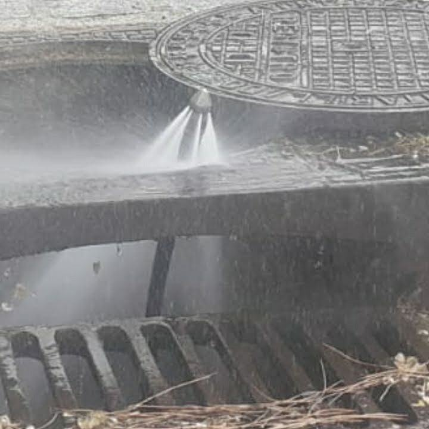
Elige lo que te pasa y te contamos qué suele ser y cómo lo resolvemos. Luego nos lo mandas por WhatsApp con una foto y te decimos el precio.
Una foto de la zona ayuda a darte el precio sin ir dos veces.
Desde el grifo de tu cocina hasta el colector de la calle. Un solo profesional para todo el recorrido del agua.
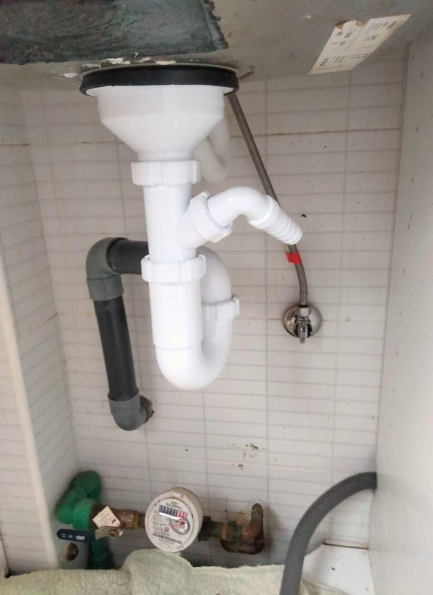
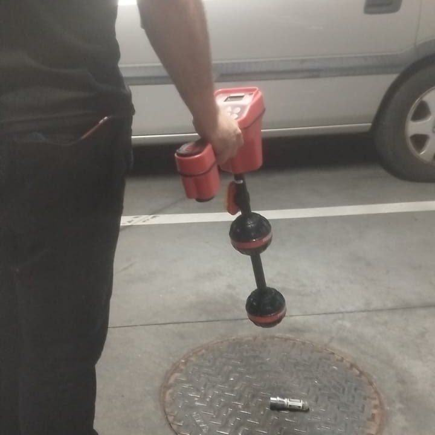
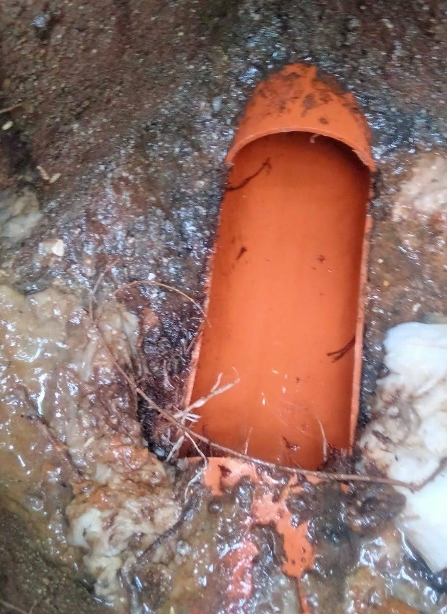
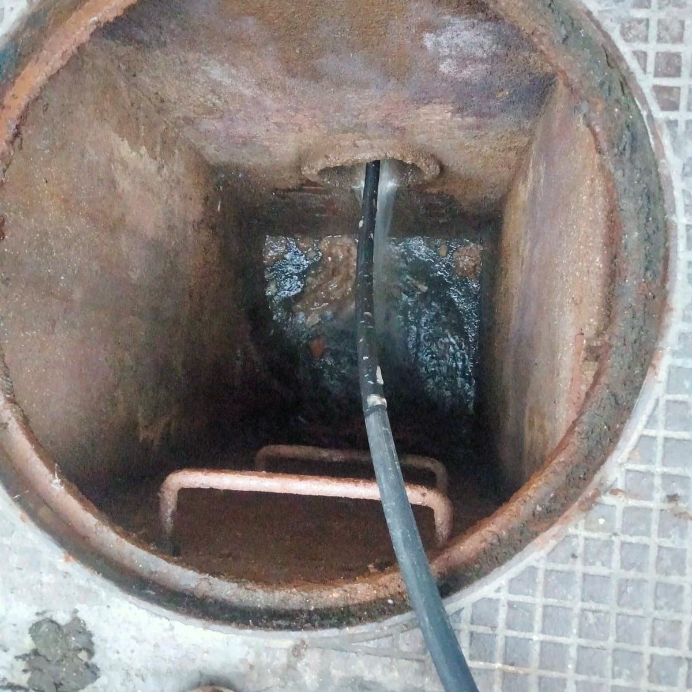
Fotos de nuestros trabajos. Casi todos los atascos graves vienen de lo mismo.
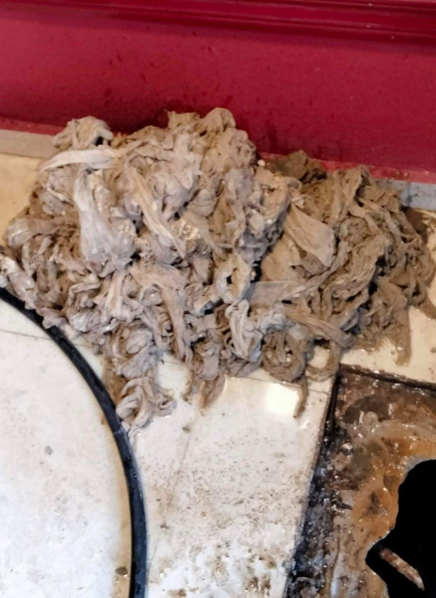
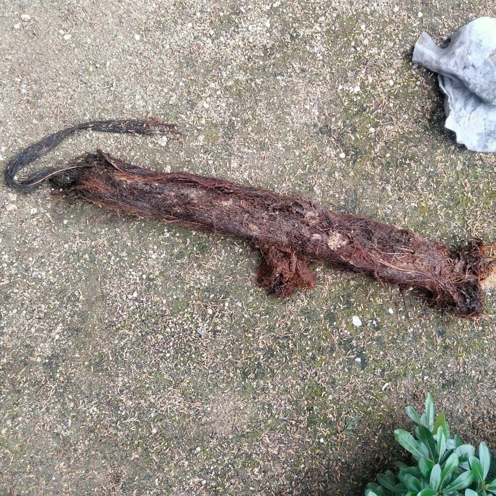
Consejo de Óscar: al váter, solo papel. Las toallitas «biodegradables» también atascan.
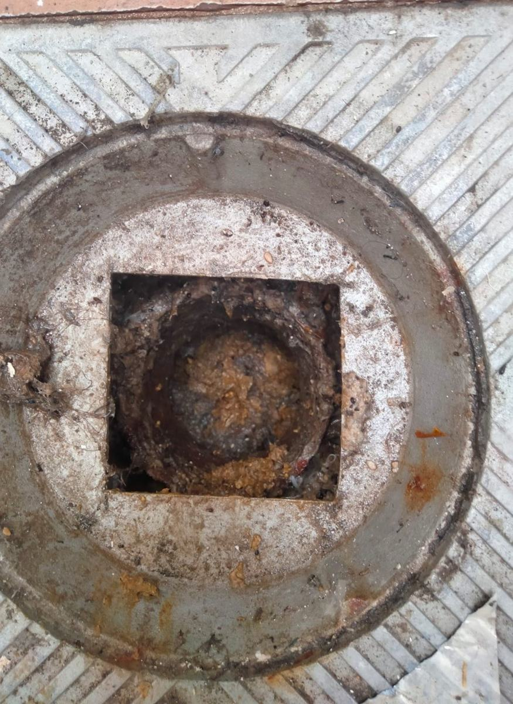
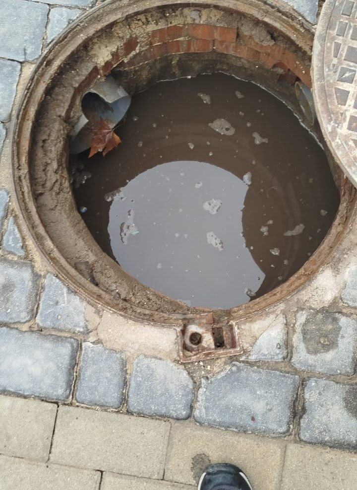
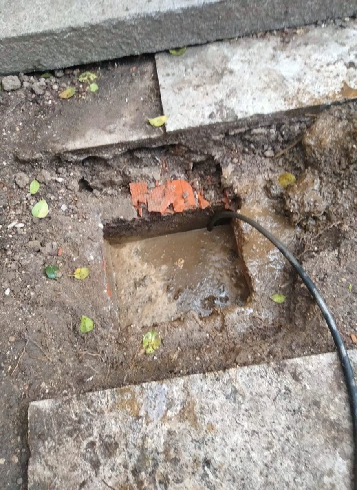
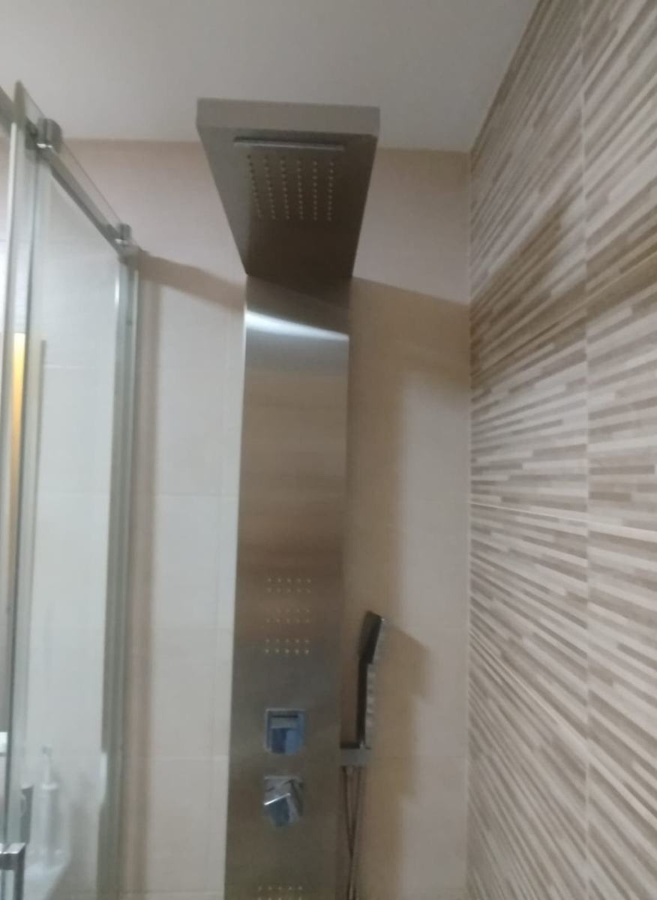
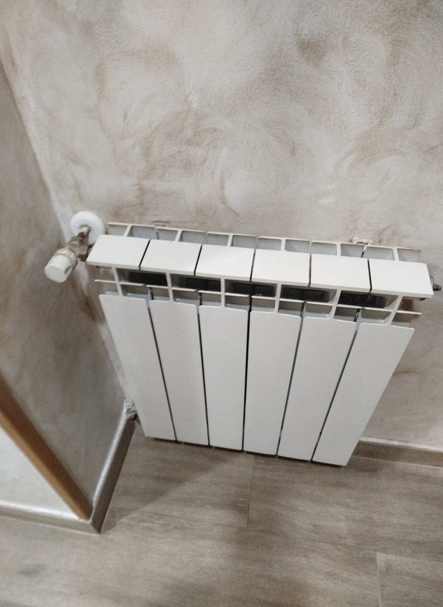
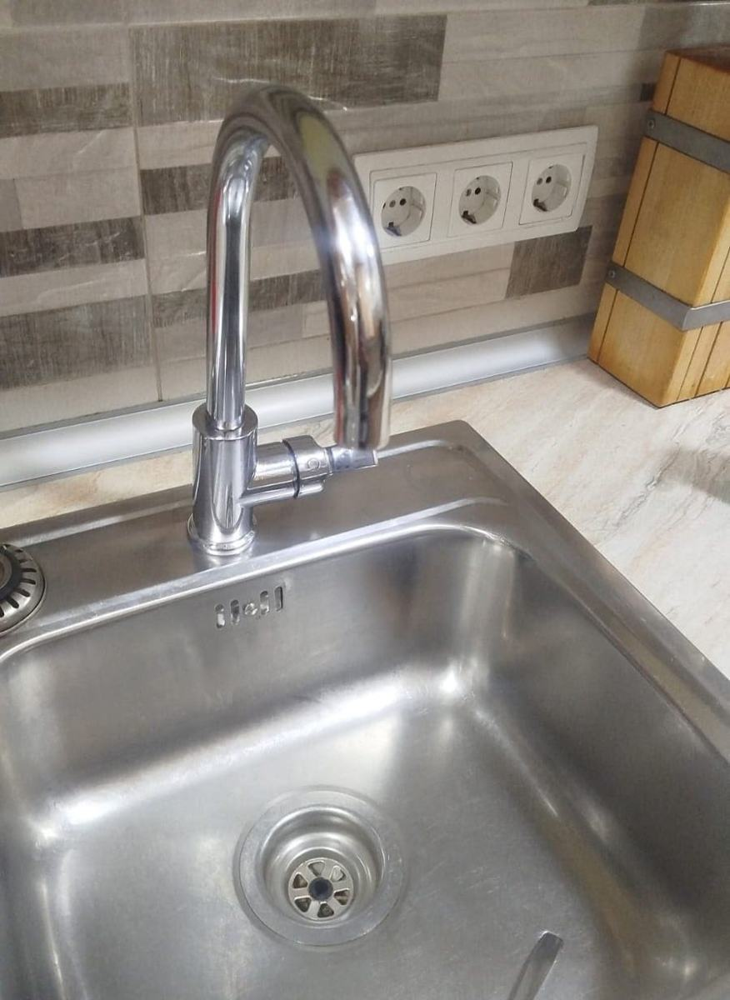
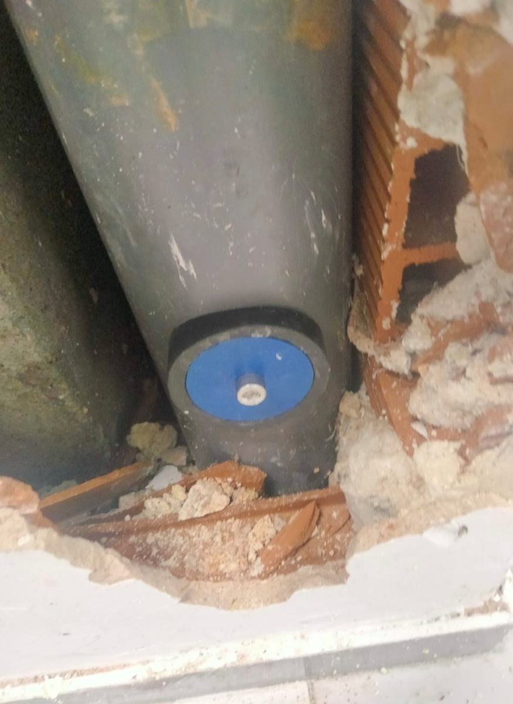
Estamos en Carabanchel. ¿Tu zona no sale? Llama y te decimos si podemos ir.
| Lunes | Abierto 24 horas |
|---|---|
| Martes | Abierto 24 horas |
| Miércoles | Abierto 24 horas |
| Jueves | Abierto 24 horas |
| Viernes | Abierto 24 horas |
| Sábado | Abierto 24 horas |
| Domingo | Abierto 24 horas |
Presupuesto sin compromiso. Te decimos el precio antes de empezar.